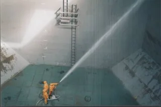

مويه الخزان تسبب لي حساسية أو حكة: هل الخزان السبب؟
تطلع من الدش وجلدك يحكك، أو تلاحظ احمرار خفيف وجفاف بعد غسيل اليدين، وأول سؤال يجي في بالك: هل الموية هي السبب؟ وبعدها مباشرة تفكر في الخزان اللي فوق السطح أو تحت الحوش. سؤال حكة الجلد من مويه الخزان بالرياض من الأسئلة اللي توصلنا كثير من العملاء في الرياض، وهو سؤال منطقي، لكن جوابه مو بسيط.
في هالمقال نحاول نساعدك تفكر في الموضوع بهدوء: وش الأسباب الكثيرة اللي ممكن تسبب الحكة غير الخزان، ووش اللي ممكن يخلي الخزان سبب محتمل، وكيف تتأكد بنفسك بخطوات بسيطة، ومتى تراجع الطبيب، ومتى يكون تنظيف الخزان خطوة منطقية تستبعد فيها هالاحتمال.
💡 هالمقال معلوماتي عن الخزانات والمياه فقط، وما يقدم تشخيص لأي حالة جلدية ولا علاج. أسباب الحكة كثيرة، والخزان احتمال واحد منها. لو الأعراض مستمرة أو قوية، أو فيها تورم أو طفح منتشر أو صعوبة تنفس، راجع الطبيب أو الصيدلي فورًا.
حكة الجلد من مويه الخزان بالرياض: هل فعلًا الخزان هو السبب؟
الموية تلمس جلدك كل يوم، فطبيعي إنك تشك فيها أول شي لما تحس بحكة. لكن الحكة نفسها عرض ممكن يجي من أسباب كثيرة، بعضها ما له علاقة بالموية أصلًا. ولهالسبب ما نقدر نقول إن حكة الجلد من مويه الخزان بالرياض حقيقة ثابتة في كل بيت، ولا نقدر نستبعدها بالكامل.
اللي نقدر نقوله إن حالة الخزان ممكن تأثر على جودة الموية اللي توصلك، والخزان المهمل ممكن يكون فيه رواسب أو طحالب أو بقايا مواد. وأحيانًا يكون هذا عامل من العوامل، وأحيانًا ما يكون له دور أبدًا. والطريقة الصحيحة إنك تمر على كل الاحتمالات، وتستبعدها وحدة وحدة.
والسؤال اللي يتكرر عندنا: هل ماء الخزان يسبب حساسية بالرياض؟ والجواب الأمين إن الخزان ممكن يكون عامل مساعد في بعض الحالات، لكن الحساسية نفسها موضوع طبي يحدده الطبيب، مو شركة التنظيف.
أسباب محتملة للحكة غير الخزان
قبل ما تحكم على الخزان، فكر في هالأسباب. وأحيانًا يطلع السبب شي بسيط ما خطر على البال.
نوع الصابون والشامبو
تغيير الصابون أو الشامبو أو سائل الاستحمام من أكثر الأشياء اللي ممكن تتزامن مع ظهور الحكة. بعض المنتجات فيها عطور أو مواد ممكن ما تناسب كل جلد. ولو بدأت الحكة بعد ما غيرت منتج، فراجع هالاحتمال قبل ما تحسبها حكة الجلد من مويه الخزان بالرياض، لأن التوقيت هنا يدل على المنتج أكثر.
حرارة الموية
الموية الحارة جدًا ممكن تجفف الجلد عند بعض الناس، خصوصًا مع الاستحمام الطويل، وأحيانًا يحسب الشخص إن عنده حكة الجلد من مويه الخزان بالرياض والسبب الحرارة. وفي الشتاء، كثير من الناس يرفعون حرارة السخان ويطولون تحت الدش، وبعدها يلاحظون جفاف وحكة. وأحيانًا تخفيف الحرارة وتقصير وقت الاستحمام يفرق.
جفاف الجو في الرياض
الرياض جوها جاف أغلب السنة، والمكيفات تشتغل فترات طويلة، وهالشي ممكن يأثر على رطوبة الجلد. والجفاف والحكة عند بعض الناس يزيدون في مواسم معينة بدون ما يكون للموية دور. فلو كانت الحكة تزيد مع الجو الجاف بغض النظر عن الاستحمام، فالجو نفسه ممكن يكون السبب، وتقل احتمالية حكة الجلد من مويه الخزان بالرياض في حالتك.
سخان المياه
السخان يتجمع فيه مع الوقت رواسب وأملاح، وأحيانًا صدأ لو كان قديم. والموية الحارة اللي تطلع منه ممكن تختلف عن الموية الباردة اللي تجي من الخزان مباشرة. فلو لاحظت إن الحكة تجي مع الموية الحارة بس، فافحص السخان أول، لأنه أحيانًا يكون مصدر المشكلة اللي تنحسب حكة الجلد من مويه الخزان بالرياض.
الأقمشة والمنظفات
الملابس والمناشف والمفارش، ومنظف الغسيل ومعطر الأقمشة، كلها تلمس جلدك بعد الاستحمام. وتغيير نوع منظف الغسيل ممكن يكون هو السبب، مو الموية. والملابس الصوفية أو الصناعية ممكن تهيج الجلد عند بعض الناس.
عوامل شخصية
فيه عوامل تخص الشخص نفسه، مثل طبيعة جلده، أو أدوية يستخدمها، أو حالات صحية ما يعرف عنها. وهذي كلها أمور يقيمها الطبيب، وما يقدر أحد يحكم عليها من برا. ولهالسبب نقول دايم: لو الحكة مستمرة، الطبيب أول.
هل ماء الخزان يسبب حساسية بالرياض؟ وش اللي ممكن يخلي الخزان سبب محتمل
لما تستبعد الأسباب اللي فوق أو تشك فيها كلها، يصير الخزان احتمال يستاهل تفحصه. وهذي الأشياء اللي ممكن تخلي موية الخزان عامل من العوامل:
رواسب وأتربة في القاع
مع الوقت، يتجمع في قاع الخزان رمل وطين وأتربة، خصوصًا في الرياض مع العواصف. وهالرواسب ممكن تتحرك وقت سحب الموية بقوة أو وقت تشغيل المضخة، فتوصل للحنفيات والدش. وأحيانًا تكون الموية عكرة شوي بدون ما تنتبه، وهنا يرجع سؤال هل ماء الخزان يسبب حساسية بالرياض، لأن بعض الناس يحسون بانزعاج من الموية العكرة.
إهمال التنظيف الدوري
الخزان اللي ما انتظف من سنين يكون فيه تراكمات على الجدران والقاع، وحالته من الداخل ممكن تكون بعيدة عن اللي تتخيله. وهنا يجي سؤال ليش ننظف الخزان الارضي وليش ننظف الخزان العلوي بشكل دوري: لأن الخزان المهمل ما تشوف حالته إلا لما تفتحه.
طحالب وأغشية بكتيرية
في بعض الخزانات، خصوصًا اللي يدخلها ضوء أو تسخن موياتها، ممكن تتكون طحالب أو طبقة لزجة على الجدران. وهالطبقة ممكن تأثر على طعم الموية وريحتها، وأحيانًا تكون علامة إن الخزان يحتاج تنظيف وتعقيم، وبعض اللي يسألون هل ماء الخزان يسبب حساسية بالرياض ما يدرون إن خزانهم فيه طبقة زي هذي.
بقايا مواد تنظيف أو كلور
لو انتظف الخزان قبل فترة قريبة بطريقة غير محكمة، ممكن تبقى بقايا مواد تعقيم أو كلور بتركيز أعلى من المفترض، لو ما انشطف الخزان زين. وريحة الكلور القوية في الموية بعد التنظيف ممكن تكون مزعجة لبعض الناس. ولهالسبب الشطف بعد التعقيم خطوة أساسية.
حرارة الموية في الخزان العلوي صيفًا
الخزان العلوي في الصيف ممكن تسخن موياته لدرجة عالية من الشمس، وتطلع الموية "الباردة" حارة. والموية الدافية في خزان ما ينظف بانتظام ممكن تكون بيئة أنسب لنمو الطحالب. وهنا يجي سؤال ليش ننظف الخزان العلوي في الصيف بالذات.
الأملاح وعسر الموية
الموية فيها أملاح ذايبة بنسب مختلفة، ومع التسخين تترسب في السخان والحنفيات. وبعض الناس يحسون إن الموية العسرة تخلي جلدهم أجف، وهذا من الأسباب اللي تخليهم يسألون هل ماء الخزان يسبب حساسية بالرياض، أو تخلي الصابون ما يرغي زين. وهالموضوع مرتبط بطبيعة الموية نفسها أكثر من الخزان، لكن الخزان والسخان المهملين ممكن يزيدون الرواسب.

ليش ننظف الخزان الارضي؟
الخزان الأرضي هو أول مكان تستقر فيه الموية بعد ما توصل من الشبكة أو الوايت، وهو غالبًا الأكبر في البيت. ولو تسأل ليش ننظف الخزان الارضي، فالجواب إن أي رواسب أو أتربة تدخل البيت تمر عليه أول، وتترسب في قاعه. ومع الوقت، يصير القاع طبقة طين ورمل ما تشوفها إلا وقت التنظيف.
والخزان الأرضي غالبًا خرساني، وجدرانه ممكن يتكون عليها ترسبات أو طبقات لزجة. وفتحته في الحوش قريبة من التراب وموية الغسيل. فكل هذا يخلي جواب ليش ننظف الخزان الارضي واضح: لأنه المصدر الأساسي لموية البيت كلها، وأي شي فيه يوصل لكل الحنفيات والخزانات العلوية.
وفي العمائر، يصير السؤال أهم. الخزان الأرضي المشترك يخدم كل الشقق، وأي إهمال فيه يأثر على كل السكان. ولو اشتكى أكثر من ساكن من نفس الأعراض، فهذا سبب إضافي يخليك تسأل ليش ننظف الخزان الارضي الحين بدل ما تأجله.
ليش ننظف الخزان العلوي؟
الخزان العلوي هو آخر محطة قبل الحنفيات والدش، والموية اللي فيه هي اللي تلمس جلدك مباشرة. ولو تسأل ليش ننظف الخزان العلوي، فالجواب إنه أكثر خزان يتعرض للشمس والغبار والحرارة، وغطاه البلاستيكي ممكن يتشوه ويصير ما يقفل زين.
والموية في العلوي ممكن تسخن في الصيف، والخزانات اللي لونها فاتح أو يدخلها ضوء ممكن تتكون فيها طحالب. وكذلك الرواسب اللي تطلع من الأرضي مع المضخة تتجمع في قاعه. فجواب ليش ننظف الخزان العلوي مرتبط مباشرة بالموية اللي تستخدمها في الاستحمام.
وكثير من الناس يسألون ليش ننظف الخزان الارضي وينسون العلوي، أو يسألون ليش ننظف الخزان العلوي وينسون الأرضي. والصحيح إن الاثنين مرتبطين: لو نظفت العلوي والأرضي متسخ، بيرجع يتعبى رواسب. ولو نظفت الأرضي والعلوي متسخ، الموية بتمر على قاع متسخ قبل ما توصلك.
علامات تقول إن الخزان يحتاج فحص
فيه علامات واضحة تقدر تلاحظها في الموية نفسها، وتقول لك إن الخزان يستاهل فحص، بغض النظر عن الحكة:
- عكارة في الموية، خصوصًا أول ما تفتح الحنفية
- ريحة غريبة، مثل ريحة عفن أو طين أو كلور قوي
- رواسب أو حبيبات في الكاسة أو قاع الحوض
- تغير في لون الموية، مثل مصفر أو بني
- طعم مختلف عن المعتاد
- فلاتر الحنفيات تنسد بسرعة
- الأعراض تزيد في وقت معين، مثل بعد عاصفة أو في الصيف
لو لاحظت وحدة أو أكثر من هالعلامات، فالخزان يحتاج فحص في كل الأحوال، وممكن يكون تنظيف خزان المياه عند الحكة بعد الاستحمام بالرياض خطوة مناسبة، سواء كان له علاقة بالحكة أو ما له. وارتباط الأعراض بوقت معين، مثل إنها تزيد بعد تنظيف السطح أو بعد عاصفة ترابية، ممكن يعطيك مؤشر يستاهل تذكره للطبيب ولفريق الفحص.
محتاج تنظيف احترافي؟
فريقنا يعاين خزانك ويعطيك صورة واضحة عن حالته من الداخل: رواسب، طحالب، حالة الغطاء والجدران، عشان تعرف وش وضعه بالضبط
طريقة بسيطة تتأكد فيها وحدك
قبل ما تتصل بأحد، فيه خطوات بسيطة تساعدك تفهم الصورة أكثر:
قارن موية الخزان بمصدر ثاني
لو عندك فرصة تستحم في مكان ثاني لكم يوم، مثل بيت أهلك أو فندق، لاحظ هل الحكة تختفي أو تقل. ولو اختفت هناك ورجعت في بيتك، فاحتمال حكة الجلد من مويه الخزان بالرياض أو المنتجات اللي في بيتك يصير أقوى. ولو استمرت في كل مكان، فالسبب غالبًا مو في خزانك.
لاحظ وقت ظهور الحكة
سجل متى تظهر الحكة بالضبط: مباشرة بعد الاستحمام؟ بعد ساعات؟ مع الموية الحارة بس؟ مع منتج معين؟ في موسم معين؟ وهالملاحظات تفيد الطبيب أولًا، وتساعدك تعرف إذا كان فيه رابط بالموية.
اسأل الجيران لو الخزان مشترك
في العمارة، الخزان الأرضي غالبًا مشترك، وهنا يصير سؤال ليش ننظف الخزان الارضي موضوع يخص كل السكان. اسأل الجيران بشكل عادي: هل لاحظوا تغير في الموية؟ ريحة؟ عكارة؟ ولو أكثر من ساكن لاحظ نفس الشي، فهذا مؤشر إن الخزان يستاهل فحص. ولو ما أحد لاحظ شي، فاحتمال حكة الجلد من مويه الخزان بالرياض يقل.
شوف الموية في كاسة شفافة
عبّ كاسة شفافة من الحنفية، وخلها دقايق في مكان فيه ضوء. لاحظ هل فيه عكارة أو حبيبات أو لون. وقارن بين الموية الباردة والحارة. هالاختبار البسيط ما يعطيك تحليل، لكنه يعطيك فكرة عن وضع الموية.
متى تراجع الطبيب فورًا ومتى تفحص الخزان؟
فيه حالات ما تنتظر فيها فحص الخزان، وتروح للطبيب على طول:
- طفح جلدي منتشر أو تورم في الوجه أو الشفايف
- صعوبة في التنفس أو ضيق في الصدر
- حكة شديدة تمنعك من النوم أو تزيد بسرعة
- جروح أو التهابات في الجلد من الحك
- أعراض عند طفل صغير أو كبير في السن
- أعراض مستمرة لأيام بدون تحسن
في هالحالات، الطبيب أو الصيدلي هو المرجع، وهو اللي يجاوب على سؤال هل ماء الخزان يسبب حساسية بالرياض في حالتك، ويقرر وش السبب ووش العلاج. وفحص الخزان يجي بعدها أو بالتوازي معها، كخطوة تساعد تستبعد احتمال من الاحتمالات.
أما لو كانت الحكة خفيفة، ومرتبطة بعلامات واضحة في الموية مثل العكارة أو الريحة، فهنا فحص الخزان خطوة منطقية. وحتى في هالحالة، لو ما تحسنت الأعراض، راجع الطبيب.
تنظيف خزان المياه عند الحكة بعد الاستحمام بالرياض: خطوة منطقية لاستبعاد الخزان
لما تكون استبعدت الأسباب الواضحة، والطبيب ما لقى سبب مباشر، أو لاحظت علامات في الموية نفسها، يصير تنظيف خزان المياه عند الحكة بعد الاستحمام بالرياض خطوة منطقية. والفكرة إنك تستبعد الخزان كسبب محتمل، مو إنك تتوقع إن التنظيف يحل الحكة.
ولو كان الخزان ما انتظف من فترة طويلة، فالتنظيف أصلًا يستاهل، سواء كان له علاقة بالحكة أو ما له. والخزان النظيف يعطيك راحة بال إن الموية اللي توصلك من خزان سليم، ويخليك تركز على الأسباب الثانية مع الطبيب.
والأفضل تتعامل مع فريق متخصص يفرغ الخزان وينظفه ويعقمه ويشطفه صح، عشان ما تبقى بقايا مواد. وتقدر تستعين بـشركة تنظيف خزانات بالرياض تقدر تنظف الخزان وتعقمه، وتعالج أي تشققات أو مشاكل في العزل من الداخل، وتعطيك صورة واضحة عن حالة الخزان قبل وبعد.
واطلب من الفريق يصور لك الخزان من الداخل قبل التنظيف. الصور تعطيك فكرة عن حالته: هل كان فيه رواسب كثيرة؟ طحالب؟ ترسبات؟ وهالمعلومات ممكن تفيدك وأنت تتكلم مع الطبيب عن البيئة اللي حولك.
نصايح بعد التنظيف
بعد تنظيف خزان المياه عند الحكة بعد الاستحمام بالرياض، ولما يرجع الخزان يتعبى، فيه خطوات بسيطة:
- صرّف أول موية من كل الحنفيات والدش لين تصفى.
- لو لاحظت ريحة كلور قوية، خل الموية تجري فترة أطول، وتواصل مع الفريق لو استمرت.
- نظف أو بدّل فلاتر الحنفيات ورأس الدش.
- تابع الأعراض أسبوع أو أسبوعين، وسجل أي تغير.
- لو ما تغير شي، فاحتمال حكة الجلد من مويه الخزان بالرياض يقل، وكمل مع الطبيب.
- رتب فحص وتنظيف دوري للخزان عشان ما ترجع الرواسب تتراكم.
ولا تتوقع من تنظيف خزان المياه عند الحكة بعد الاستحمام بالرياض نتيجة فورية. لو كانت الحكة لها سبب ثاني، فالتنظيف ما بيغير شي، وهذا بحد ذاته معلومة مفيدة: إنك استبعدت الخزان.
الأطفال والجلد الحساس
جلد الأطفال غالبًا أحس من جلد الكبار، ولهالسبب كثير من الأمهات أول من يلاحظ احمرار أو حكة بعد الاستحمام. ولما تلاحظ الأم هالشي، أول سؤال يجيها: هل ماء الخزان يسبب حساسية بالرياض؟ وهو سؤال مفهوم، لكن مع الأطفال بالذات القرار للطبيب، مو لأي أحد ثاني.
راجعي الطبيب أول، وخبريه بكل التفاصيل: متى بدأت الأعراض، هل غيرتي منتج، هل الموية فيها شي غريب. وبالتوازي، لو الخزان ما انتظف من فترة، فالأفضل تشوفين حالته، لأن البيت اللي فيه أطفال يستاهل خزان نظيف في كل الأحوال. وهنا يرجع سؤال ليش ننظف الخزان العلوي بشكل خاص، لأن موية الحمام كلها تمر عليه. ولا تحسبين الأعراض حكة الجلد من مويه الخزان بالرياض قبل ما يشوفها الطبيب.
الخزان المشترك في العمارة
في العمائر، الخزان الأرضي يخدم كل الشقق، والسكان غالبًا ما يعرفون متى انتظف آخر مرة. ولو اشتكى ساكن من حكة، يصير صعب يعرف هل المشكلة في بيته ولا في الخزان المشترك.
اسأل مالك العمارة أو مكتب العقار: متى آخر تنظيف؟ هل فيه سجل؟ ولو ما فيه إجابة واضحة، فهذا بحد ذاته سبب يخلي سؤال ليش ننظف الخزان الارضي مطروح على المالك. والمالك ممكن يتجاوب أسرع لما يسمع نفس الملاحظة من أكثر من ساكن. ولو صار التنظيف، اطلب صور قبل وبعد. وبعدها تقدر تعرف إذا كانت حكة الجلد من مويه الخزان بالرياض مرتبطة بالخزان المشترك، أو إن السبب في مكان ثاني. وفي العمائر بالذات، تنظيف خزان المياه عند الحكة بعد الاستحمام بالرياض قرار يخص كل السكان، فالأفضل يتنسق مع الكل. ولو الخزانات العلوية لكل شقة، فسؤال ليش ننظف الخزان الارضي يجي قبل سؤال العلوي، لأن الأرضي يغذيها كلها.
السخان وعلاقته بالموية الحارة
السخان هو المكان اللي تسخن فيه الموية قبل الدش، ومع الوقت يتجمع في قاعه رواسب وأملاح، خصوصًا لو ما انصرف ولا مرة. وبعض الناس يلاحظون إن الموية الحارة لونها أو ريحتها مختلفة عن الباردة، وهذا مؤشر إن السخان يحتاج تنظيف.
والسخان يتغذى من الخزان العلوي، فلو كان العلوي فيه رواسب، تنتقل للسخان. وهذا من أوضح أجوبة ليش ننظف الخزان العلوي: لأنه يغذي السخان والدش مباشرة. ولو كنت تشك في حكة الجلد من مويه الخزان بالرياض، افحص السخان والخزان العلوي مع بعض، لأن المشكلة ممكن تكون في واحد منهم أو في الاثنين. وتصريف السخان وتنظيفه شغل يحتاج فني، لأن فيه كهرباء وموية حارة.
فلاتر الدش والحنفيات
بعض البيوت تركب فلتر على رأس الدش، أو فلتر مركزي على مدخل البيت. والفلتر ممكن يقلل الرواسب اللي توصل للجلد، لكنه يحتاج تغيير بانتظام، والفلتر المنسد ممكن يصير هو نفسه مصدر للرواسب أو الريحة.
لو عندك فلتر، شوف حالته: هل تغير لونه؟ هل فيه رواسب؟ متى آخر مرة غيرته؟ ولو كان مليان رواسب، فهذا يعطيك فكرة عن حالة الموية اللي توصلك من الخزان. وفي هالحالة، تنظيف خزان المياه عند الحكة بعد الاستحمام بالرياض يكون خطوة منطقية قبل ما تركب فلتر جديد، عشان ما ينسد بسرعة. والفلتر النظيف بعد خزان نظيف يعطيك صورة أوضح لو استمرت حكة الجلد من مويه الخزان بالرياض أو اختفت. ولا تعتمد على الفلتر وحده وتنسى ليش ننظف الخزان العلوي، لأن الفلتر ما يشيل الرواسب من القاع.
الصيف والشتاء: وش يتغير؟
في الصيف، الخزان العلوي يسخن من الشمس، والموية تطلع دافية حتى من الحنفية الباردة. والحرارة مع الإهمال ممكن تشجع نمو الطحالب. وفي الصيف بالذات يصير جواب ليش ننظف الخزان العلوي أوضح: لأن الموية اللي فيه تسخن وتقعد فترة قبل ما تستخدمها.
وفي الشتاء، الناس يرفعون حرارة السخان، والجو يكون أجف، والجلد يتأثر أكثر. ولو لاحظت إن الحكة تزيد في الشتاء بس، فالجو وحرارة الموية ممكن يكونون السبب أكثر من الخزان. ولو كانت تزيد في الصيف مع موية العلوي الدافية، فهذا مؤشر يخليك تسأل ليش ننظف الخزان العلوي وتفحصه. ومقارنة المواسم تساعدك تفرق بين حكة الجلد من مويه الخزان بالرياض وبين تأثير الجو.
سجل بسيط للأعراض والموية
من أفيد الأشياء اللي تقدر تسويها إنك تكتب ملاحظات يومية بسيطة لمدة أسبوعين: متى استحميت، حرارة الموية، المنتج اللي استخدمته، ومتى ظهرت الحكة وكم كانت قوية. وسجل كذلك أي شي غريب في الموية: عكارة، ريحة، لون.
هالسجل يفيد الطبيب أول، لأنه يعطيه صورة واضحة عن نمط الأعراض. ويفيدك أنت لما تقرر: هل ماء الخزان يسبب حساسية بالرياض في حالتي، ولا السبب منتج أو جو؟ ولو بينت الملاحظات إن الأعراض تتزامن مع تغير الموية، يصير تنظيف خزان المياه عند الحكة بعد الاستحمام بالرياض خطوة لها مبرر واضح. وبعد التنظيف، كمل نفس السجل، وقارن بين الفترتين.
أخطاء شائعة لما تشك في الخزان
أول غلطة إنك تحكم إن الخزان هو السبب بدون ما تراجع الطبيب، وتأخر العلاج وأنت تنتظر نتيجة التنظيف. والثانية إنك تنظف الخزان بنفسك بمواد قوية وتشطفه شطف ناقص، فتزيد المشكلة بدل ما تحلها.
والثالثة إنك تنظف العلوي بس وتنسى الأرضي، مع إن جواب ليش ننظف الخزان الارضي واضح: الأرضي هو المصدر. والرابعة إنك تنظف الخزان وتترك السخان والفلاتر مثل ما هي. والخامسة إنك تتوقع إن تنظيف خزان المياه عند الحكة بعد الاستحمام بالرياض يعالج الحكة، فلما ما تختفي تحس إنك ضيعت وقتك، مع إنك استبعدت احتمال مهم. وتجنب هالأخطاء يخلي صورة حكة الجلد من مويه الخزان بالرياض أوضح لك وللطبيب.
وش تسأل الشركة قبل التنظيف؟
لما تتواصل مع شركة تنظيف خزانات، اسألهم أسئلة واضحة:
- هل تنظفون الخزان الأرضي والعلوي في نفس الزيارة؟
- وش المواد اللي تستخدمونها في التعقيم، وهل هي مناسبة لموية الشرب؟
- كيف تتأكدون إن الشطف كامل وما تبقى بقايا مواد؟
- هل تصورون الخزان من الداخل قبل وبعد؟
- هل تفحصون الغطاء والتشققات والعزل؟
والشركة اللي تجاوبك بوضوح على سؤال ليش ننظف الخزان الارضي وليش ننظف الخزان العلوي، وتشرح لك خطوات تنظيف خزان المياه عند الحكة بعد الاستحمام بالرياض، غالبًا تعرف شغلها. أما اللي ما تذكر الشطف ولا التصوير، فاسأل أكثر قبل ما تحجز.
كم مرة تنظف الخزان؟
بيوت كثيرة في الرياض تنظف الخزان مرة أو مرتين في السنة، وتزيد لو لاحظت تغير في الموية. والمهم إن التنظيف يكون منتظم، لأن الخزان اللي ينتظف بشكل دوري ما يوصل لحالة تفاجئك.
ولو تسأل ليش ننظف الخزان الارضي كل كم شهر، فهو غالبًا يحتاج متابعة لأنه يستقبل الرواسب أول. ولو تسأل ليش ننظف الخزان العلوي بنفس الوتيرة، فهو يتأثر بالشمس والغبار أكثر. والأفضل يكون الاثنين في جدول واحد، بحيث تنظفهم مع بعض في نفس الزيارة. وكثير من العملاء يربطون التنظيف بمواسم معينة، مثل قبل الصيف أو بعد موسم الأتربة. وفهمك لـليش ننظف الخزان الارضي وليش ننظف الخزان العلوي يخليك تلتزم بالجدول بدل ما تأجله.
الخزان بعد السفر الطويل
لما تسافر شهر أو أكثر، الموية تقعد في الخزان بدون حركة، ومع الحرارة ممكن تتغير ريحتها وطعمها. وبعض الناس يرجعون من السفر ويلاحظون حكة أو انزعاج بعد أول استحمام، ويحسبونها حكة الجلد من مويه الخزان بالرياض.
بعد الرجوع، صرّف الموية الواقفة من كل الحنفيات قبل ما تستحم، وخلها تجري لين تتجدد. ولو كانت الريحة أو اللون غريب، فهنا جواب ليش ننظف الخزان العلوي عملي جدًا: لأن الموية الواقفة في العلوي هي أول شي يوصلك. وإذا استمرت الملاحظة، رتب فحص وتنظيف قبل ما تعتمد على الموية. ولا تنسى إن جواب ليش ننظف الخزان الارضي ينطبق هنا بعد، لأن الأرضي كان واقف نفس الفترة.
لو الخزان جديد
البيت الجديد ممكن يكون خزانه فيه بقايا بناء أو مواد عزل لسا ما انشطفت زين. وبعض الناس يلاحظون انزعاج أول ما يسكنون، ويسألون هل ماء الخزان يسبب حساسية بالرياض مع إن الخزان جديد.
في هالحالة، التنظيف والشطف قبل السكن خطوة منطقية، حتى لو الخزان جديد. والجواب على ليش ننظف الخزان الارضي وليش ننظف الخزان العلوي في البيت الجديد: عشان تشيل أي بقايا من فترة البناء، وتبدأ بموية من خزان نظيف ومشطوف.
الوايت ومصدر الموية
لو تعتمد على الوايت في تعبئة الخزان، فجودة الموية تعتمد على مصدرها وعلى نظافة صهريج الوايت نفسه. والوايت من مصدر غير موثوق ممكن يجيب معه رواسب أو ريحة.
اختر وايت من مصدر معروف، ولاحظ الموية بعد كل تعبئة. ولو لاحظت تغير بعد وايت معين، فهذي معلومة مهمة. وهنا يصير جواب ليش ننظف الخزان الارضي مرتبط بالوايت مباشرة: لأن كل تعبئة ممكن تضيف رواسب جديدة للقاع. وبعض اللي يسألون هل ماء الخزان يسبب حساسية بالرياض يلاحظون إن التغير جا بعد تعبئة من مصدر مختلف.
الضيوف والعمالة المنزلية
أحيانًا يشتكي ضيف أو عاملة منزلية من حكة بعد الاستحمام في بيتك، بينما أهل البيت ما يحسون بشي. وهالشي ممكن يكون بسبب اختلاف طبيعة الجلد، أو لأنهم متعودين على موية من مصدر مختلف، أو بسبب منتجات مختلفة.
ما تقدر تحكم إن السبب حكة الجلد من مويه الخزان بالرياض من شكوى شخص واحد. لكن لو تكررت الشكوى من أكثر من شخص، مع علامات في الموية، فهذا يستاهل فحص الخزان. وفي كل الأحوال، لو الأعراض قوية عند أي أحد، انصحه يراجع الطبيب.
فحص الموية في مختبر
لو تبي إجابة أدق من الملاحظة، تقدر تفحص عينة من الموية في مختبر معتمد لفحص المياه. والفحص يعطيك معلومات عن الأملاح والعكارة وبعض المؤشرات، وتقدر تعرضها على الطبيب لو احتاجها. وهالخطوة مفيدة خصوصًا لو كان سؤال هل ماء الخزان يسبب حساسية بالرياض يشغلك وتبي معلومة واضحة بدل التخمين.
خذ العينة بالطريقة اللي يطلبها المختبر، واسألهم هل الأفضل تاخذها من الحنفية مباشرة ولا بعد ما تجري الموية شوي. ولو بينت النتائج مؤشرات تخص الخزان، يصير تنظيف خزان المياه عند الحكة بعد الاستحمام بالرياض قرار مبني على معلومة، مو على شك. ونتيجة الفحص نفسها ما تشخص الحكة، لكنها تساعد تستبعد أو تثبت احتمال الموية.
الطحالب في الخزانات الفاتحة
بعض الخزانات العلوية البلاستيكية لونها فاتح أو شبه شفاف، ويدخلها ضوء الشمس. والضوء مع الموية الدافية ممكن يساعد على تكون طبقة خضراء على الجدران الداخلية مع الوقت. وهالطبقة ممكن تأثر على ريحة الموية وطعمها.
لو خزانك من هالنوع، شيك عليه من الداخل وقت التنظيف. وهنا جواب ليش ننظف الخزان العلوي واضح جدًا: لأن الطحالب ما تختفي لحالها، وتحتاج غسيل وتعقيم. ولو تكررت المشكلة، فكر في تبديل الخزان بخزان معتم أو تغطيته من الشمس. وبعض اللي يسألون هل ماء الخزان يسبب حساسية بالرياض يكون عندهم خزان من هالنوع بدون ما ينتبهون.
بعد التنظيف بأسبوعين: وش تتوقع؟
بعد تنظيف خزان المياه عند الحكة بعد الاستحمام بالرياض، تابع الوضع أسبوعين. لو تحسنت الأعراض بشكل واضح ومستمر، فهذا يدل إن الموية كانت ممكن عامل من العوامل، وكمل مع جدول تنظيف دوري. ولو ما تغير شي، فاحتمال حكة الجلد من مويه الخزان بالرياض يقل كثير، والأفضل تركز مع الطبيب على الأسباب الثانية.
وفي الحالتين، لا تحكم بشكل نهائي بدون رأي الطبيب. والتحسن ممكن يكون صدفة مع تغير الجو أو تغيير منتج، والعكس صحيح. والمهم إنك صرت عارف حالة خزانك، وهالمعلومة تفيدك في كل الأحوال.
ليش الأرضي والعلوي مع بعض؟
لو نظفت واحد وتركت الثاني، تكون سويت نص الشغل. الموية تدخل الأرضي أول، وتطلع منه بالمضخة للعلوي، ومن العلوي للحنفيات. وأي رواسب في الأرضي بتوصل للعلوي، وأي رواسب في العلوي بتوصل لك.
ولهالسبب لما تسأل ليش ننظف الخزان الارضي، اسأل معه ليش ننظف الخزان العلوي في نفس الوقت. والزيارة الوحدة اللي تنظف فيها الاثنين توفر عليك وقت، وتعطيك صورة كاملة عن حالة الموية في البيت. ولو كان هدفك من تنظيف خزان المياه عند الحكة بعد الاستحمام بالرياض استبعاد الخزان كسبب، فلازم يكون الاستبعاد كامل للاثنين، مو لواحد بس. وكثير من العملاء يفهمون ليش ننظف الخزان الارضي لما يشوفون صور القاع بعد التفريغ، ويفهمون ليش ننظف الخزان العلوي لما يشوفون الطبقة اللي على جدرانه.
لا تستخدم مواد قوية بنفسك
بعض الناس لما يشكون في الخزان، يصبون فيه كلور أو مواد تنظيف من المحل بدون ما يفرغونه أو يعرفون الكمية المناسبة. وهالتصرف ممكن يرفع تركيز المواد في الموية لدرجة مزعجة، ويزيد الانزعاج بدل ما يقلله.
التعقيم يحتاج كمية محسوبة حسب سعة الخزان، ووقت تلامس، وبعدها شطف. وهذا شغل فريق متخصص، مو شغل تجربة. ولو سويت هالشي قبل، صرّف الموية كلها وتواصل مع فريق يشطف الخزان صح. ولا تحاول تعالج حكة الجلد من مويه الخزان بالرياض بمواد كيميائية في الخزان.
غطاء الخزان والعزل من الداخل
حالة الخزان ما تتحدد بالنظافة بس. الغطاء اللي ما يقفل زين يدخل منه غبار وحشرات، والعزل الداخلي المتقشر ممكن تطيح قطع منه في الموية. وهالتفاصيل ما تشوفها إلا لما يتفرغ الخزان ويدخل الفني يعاينه.
ولهالسبب لما يسألنا عميل هل ماء الخزان يسبب حساسية بالرياض، ننصحه إن المعاينة تشمل الغطاء والعزل والجدران، مو بس القاع. وفي الخزانات الأرضية الخرسانية بالذات، جواب ليش ننظف الخزان الارضي يشمل فحص التشققات، لأن الشق ممكن يدخل منه تراب وموية من الحوش.
ريحة الموية: وش تقول لك؟
الريحة من أسهل العلامات اللي تلاحظها. ريحة الطين أو العفن ممكن تدل على رواسب أو طحالب في الخزان. وريحة الكلور القوية ممكن تدل على تعقيم حديث ما انشطف زين. وريحة البيض الفاسد أحيانًا تطلع من السخان مو من الخزان.
لاحظ الريحة في الموية الباردة والحارة كل وحدة لحالها. ولو كانت الريحة في الباردة، فالخزان أقرب. ولو كانت في الحارة بس، فالسخان أقرب. وهالتفريق البسيط يساعدك تقرر هل تحتاج تنظيف خزان المياه عند الحكة بعد الاستحمام بالرياض ولا صيانة السخان، ويخليك تجاوب على سؤال هل ماء الخزان يسبب حساسية بالرياض بشكل أدق مع الفني والطبيب.
متى تكتفي بالملاحظة؟
لو كانت الحكة خفيفة وجت مرة وحدة، والموية صافية وبدون ريحة، والخزان انتظف قبل فترة قريبة، فممكن تكتفي بالملاحظة لكم يوم. جرب تخفف حرارة الموية، وترجع للمنتج اللي كنت تستخدمه قبل، واسأل الصيدلي لو احتجت شي.
ولو اختفت الحكة، فغالبًا كانت مرتبطة بعامل مؤقت. ولو استمرت أو زادت، راجع الطبيب، وفكر في فحص الخزان بعدها.
وش تقول للطبيب عن الموية؟
لما تراجع الطبيب، المعلومات اللي تعطيه عن بيتك ممكن تساعده يفهم الصورة. قل له إذا كنت تستخدم موية خزان، ومتى آخر مرة انتظف، وهل لاحظت تغير في لون الموية أو ريحتها. وخبره عن أي منتج جديد بديت تستخدمه، وعن حرارة الموية اللي تستحم فيها.
ولو عندك صور للخزان من الداخل، أو نتيجة فحص مختبر للموية، خذها معك. والطبيب هو اللي يقرر إذا كانت هالمعلومات لها علاقة بحالتك أو لا، لكن وجودها يوفر عليه أسئلة كثيرة.
بيوت فيها أكثر من مصدر موية
بعض البيوت فيها مصدرين: الشبكة مباشرة لجزء من البيت، والخزان لجزء ثاني، أو خزان علوي لكل دور. وهالتوزيع يعطيك فرصة مقارنة سهلة داخل البيت نفسه: استحم من حمام يتغذى من مصدر، وبعدين من حمام يتغذى من مصدر ثاني، ولاحظ الفرق.
ولو ما تعرف أي حمام يتغذى من أي خزان، اسأل السباك أو فريق التنظيف وقت المعاينة. ومعرفة تمديدات بيتك تفيدك في هالموقف، وتفيدك بعد في الصيانة وتحديد أي خزان يحتاج اهتمام أكثر.
المغاسل والحنفيات نفسها
أحيانًا المشكلة ما تكون في الخزان ولا السخان، تكون في الحنفية أو رأس الدش نفسه. رأس الدش يتجمع فيه ترسبات وأوساخ في الفتحات الصغيرة، والمصفاة اللي في طرف الحنفية تمسك رواسب مع الوقت. ولو ما انتظفت من فترة، ممكن تطلع منها موية فيها شوائب حتى لو كان الخزان نظيف.
فك رأس الدش ومصافي الحنفيات ونظفها، وشوف وش يطلع منها. ولو كان فيها رواسب كثيرة، فهذي معلومة إضافية عن حالة الموية في بيتك، وتساعدك تقرر الخطوة الجاية. وخل تنظيف رأس الدش والمصافي عادة كل كم شهر، لأنها تاخذ دقايق وما تحتاج أدوات خاصة، وتعطيك فكرة سريعة عن الموية قبل ما تفكر في أي خطوة أكبر.
نصيحة من فريق نقاء
من شغلنا في خزانات بيوت الرياض، نشوف خزانات حالتها من الداخل تفاجئ أصحابها، ونشوف خزانات نظيفة تمامًا وأصحابها عندهم شكوى من الحكة. وهذا يخلي جواب هل ماء الخزان يسبب حساسية بالرياض يختلف من بيت لبيت.
لو عندك حكة، راجع الطبيب أول. ولو الخزان ما انتظف من فترة، نظفه لأنه يستاهل في كل الأحوال. وبين الاثنين، بتوصل لصورة أوضح عن السبب.
خلاصة سريعة
الحكة بعد الاستحمام لها أسباب كثيرة: الصابون، وحرارة الموية، وجفاف الجو، والسخان، والأقمشة، وعوامل شخصية. والخزان سبب محتمل واحد، ممكن يكون له دور لو كان فيه رواسب أو طحالب أو بقايا مواد. وتقدر تتأكد بالمقارنة والملاحظة، وتراجع الطبيب لو الأعراض قوية أو مستمرة، وتسوي تنظيف خزان المياه عند الحكة بعد الاستحمام بالرياض كخطوة تستبعد فيها الخزان من قائمة الأسباب.
أسئلة شائعة عن الحكة وموية الخزان
الخاتمة
الحكة بعد الاستحمام تقلق، وطبيعي إنك تشك في الموية والخزان. لكن الخزان سبب محتمل واحد بين أسباب كثيرة، والطبيب هو المرجع الأول لأي أعراض مستمرة. وفي بيوت الرياض، تنظيف الخزان بشكل دوري يبقى خطوة منطقية تحافظ فيها على موية نظيفة، وتستبعد فيها احتمال من الاحتمالات.
وفريق مؤسسة نقاء يخدم كل أحياء الرياض في معاينة وتنظيف وتعقيم الخزانات الأرضية والعلوية، ويعطيك صورة واضحة عن حالة خزانك من الداخل.
✨ اعرف حالة خزانك من الداخل
كلمنا على واتساب ونرتب معك موعد معاينة وتنظيف للخزان
احجز الآن مع نقاء للتنظيف
تواصل معنا واحجز معاينة وتنظيف لخزانك، ونعطيك صورة واضحة عن حالته من الداخل
- معاينة الخزان وتصويره من الداخل
- تنظيف الرواسب والطحالب من القاع والجدران
- تعقيم مناسب لموية الشرب مع شطف كامل
- خزانات أرضية وعلوية في كل أحياء الرياض